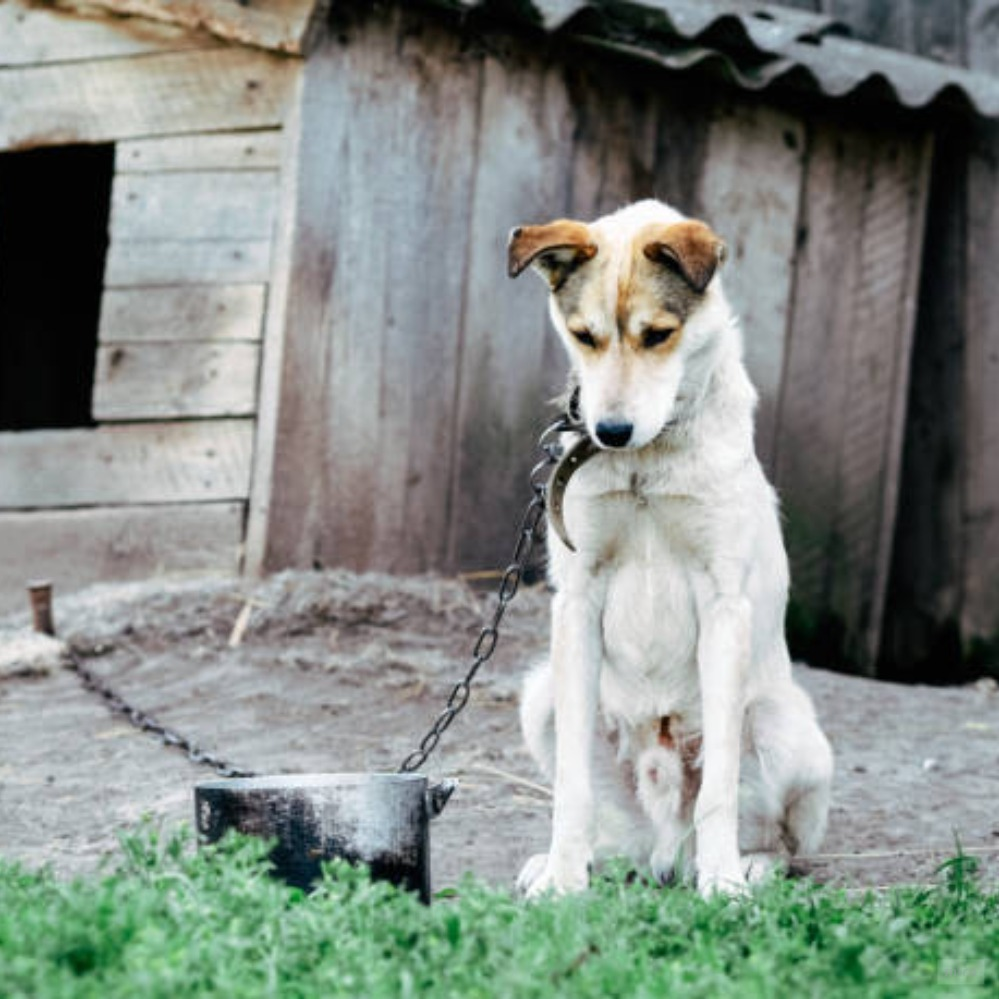

Estado: En proceso de evaluación
Tamaño: Mediano | Raza: Mestizo
Tipo de maltrato: Su dueño lo mantiene encadenado todo el día
Nombre del maltratador: Alexander Gutiérrez
Ubicación del animal maltratado: Calle Marino Cornejo 587
Se ha hecho denuncia policial: Sí, se ha hecho denuncia policial